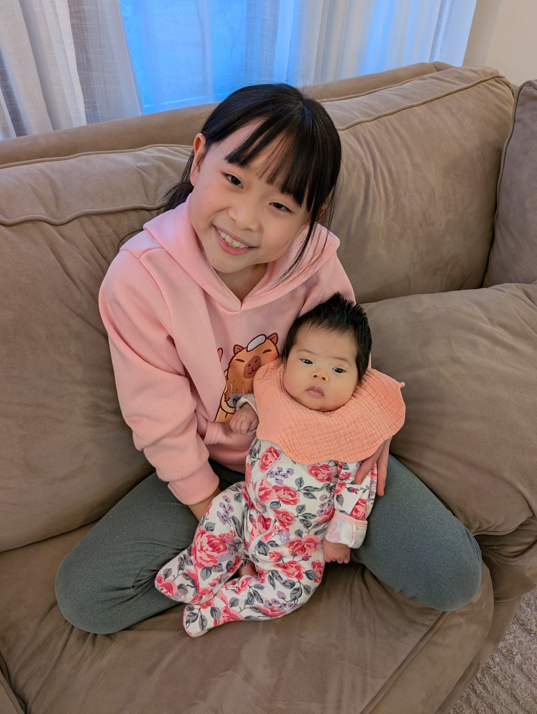
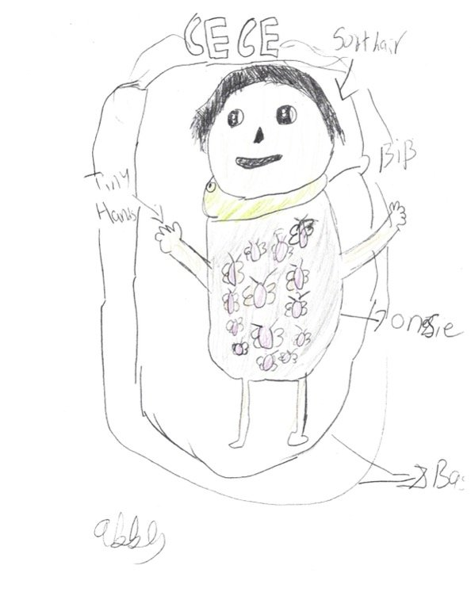

Author: Annie and Abby
We offered our older children a chance to write their memories of Cece on this website, and they both wanted to share some words. Abby also shared a drawing, but Annie couldn't because her dominant hand is still in a sling.
Annie
This is my story, about the time I spent with Cece when she was still with us. Cece was the cutest, chubbiest, liveliest, baby I know. And I am very sad that God had to take her early, but I still want to remember her time with us.
In Cece's early days, she was very quiet, even though I didn't get to see her every moment of the day because she was at the hospital, I knew that she was going to be a great baby sister. When she finally got out of the hospital to come home it was snowing, we already had a nursery set up for her (it was supposed to be a guest-room) I remember every day after I came home from school with my younger sister, we would always visit our mom and get to hold Cece, sometimes we even got to eat snack with her. I also remember that sometimes when she got to do belly time on the floor next to us while we were doing our homework, sometimes when our mom got to pick us up from school or ballet class, Cece would often come with my mom. Cece I think had a good experience living with us even if it was a short period of time.
Abby
My sister-- Cece was cute and chubby. When Cece was growing up she was very chill. Also, she would smile at me when I play with her. We would set her on a belly-time mat and play music to encourage her. Cece was my best friend in some ways. In other ways she was my cute baby sister. We would often hold her and once in a while I would feed her. During belly time, she could lift her head about 1/2 foot above the ground! Even though she would spit up and drool on me I help Cece clean up. Cece had really soft hair. During nights I had dreams about Cece and even after I still dreamed and remembered Cece.